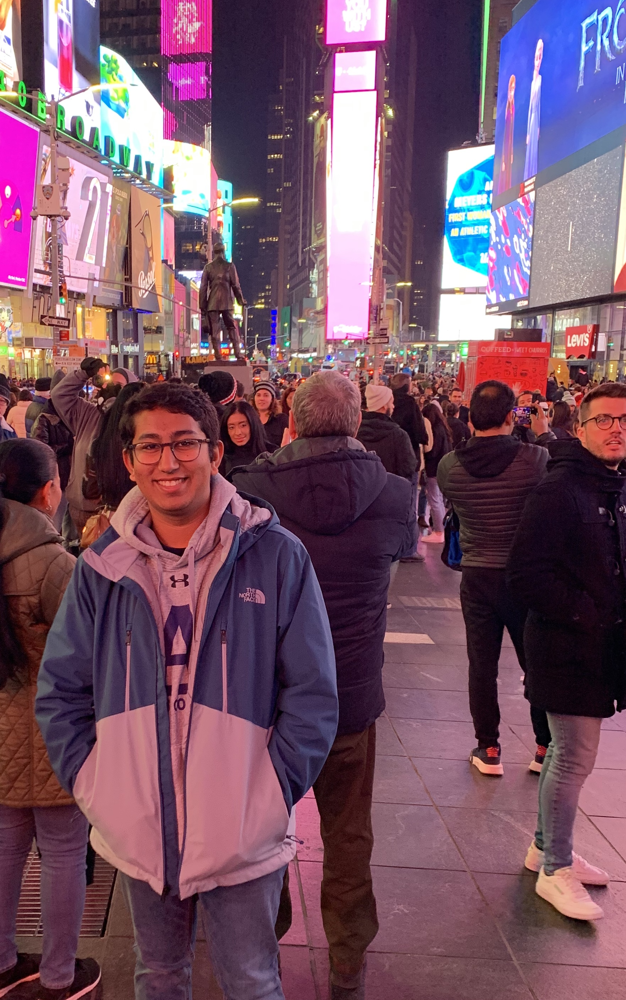

-
Hello, and welcome!
My name is Shardul Joshi, and I am a sophomore at Rensselaer Polytechnic Institute studying computer science along with a minor in management (business), but I am a junior by credits. My interest in computer science and programming stemmed from my classes early on in high school. Since then, I have taken the opportunity to learn more about the field both through higher education and personal projects. These projects show a theme: an emphasis on educational technologies. I have always valued education highly, and my experiences as a math tutor and a counselor as a STEM camp, both for middle and high school students, have allowed me to help others develop the same appreciation for it. The same goes for my past position as a tutor for Data Structures as a part of the Rensselaer Advising and Learning Academic Center. I am hoping to utilize the technical skills that I have developed so far, as well as those that I will continue to develop over the next few years at RPI, to contribute to the field of educational technolgies post graduation.
Curriculums at RPI are known to be rigorous, and my coursework has been no different. My computer-science-related courswork includes but is not limited to Data Structures, Introduction to Algorithms, and Linear Algebra. I am currently enrolled in Programming Languages. My management minor is also in progress, and for this I have taken Introduction to Management and am enrolled in Financial Accounting for this Fall semester.
This website showcases my many computer-science experiences, and a PDF of my resume can also be found here. -
-
Below, you will find a series of projects that I have completed over the years, ranging from simple, static websites to iOS applications. As is evident, there is a theme that emerges in my later projects: educational technologies. I have always valued education deeply, and prioritized being a student before many other things. Having also experienced the alternate side of education as a math tutor for two years, and, later, a counselor for a STEM camp for middle and high school students, I have developed an interest in creating solutions to help enhance the educational experience, both for students and teachers. In the future, I would like pursure more such opportunities to contribute to the field of educational technologies.
7PlusH Jul 2018
In the fall of 2017, Andover High School implemented a new block schedule known as 7+H. With 8 days, 7 classes, and 1 enrichment period, students were having difficulty keeping track of their schedule. While there was an Android app, few people knew about it and most students were iOS users. Many students ended up taking screenshots of their schedule and saving them as their wallpapers. This was a quite ineffective method – in order to fit the enter 8-day cyle on the screen, the font size had to be very small, and the hallways were filled with students squinting to look at their next class. Having experienced their struggle, I began working on an iOS app, written in Swift. Students login to the school grades portal and the app, mindful of privacy, only stores the student’s current schedule.
Swift XcodeCourseHub Oct 2019 • •
CourseHub is a Flask application developed by myself and three others at a hackathon called HackRPI. The software utilizes Raspberry Pi's and cameras installed classrooms to automatically record and upload lectures to Google Cloud storage. These lectures are then accessible through a website that uses Flask to dynamically populate templates with the relevant information stored in the cloud. A rudimentary prototype can be viewed at the link. The project was submitted as a part of the "Accessibility in Education" theme at HackRPI.
Python Flask HTML CSS Google Cloud Heroku Bootstrap Raspberry PiPositweet April 2019 •
Positweet is a Flask application developed by myself and three others at a hackathon called HackDartmouth. Positweet is a content moderation software for your Twitter feed. First, you enter your phone number and Twitter username. From then on, when someone comments on your latest Tweet, our Python script gets the comments using Twitter's public API and analyzes the sentiment using Google Cloud's natural language processing API. Depending on the preference you select in setting up the software, we will send you a text notification if it is a positive or negative comment. The project was submitted to the HackDartmouth competition for multiple categories.
Python Flask HTML CSS Google Cloud Twilio Twitter BootstrapArden Sep 2017 – Apr 2018
Over the course of my junior year, I participated in a program called TiE Young Entrepreneurs, which was run by the Boston chapter of an organization called TiE, or The Indus Entrepreneurs. The program consisted of workshops every other Saturday from September 2017 to April 2018, when it culminated with a business plan competition judged by a panel of real-world venture capitalists. TiE brought in entrepreneurs to speak at these workshops about their experiences and teach us about various aspects of running a startup – research, marketing, finances, prototyping, etc. The cohort split into teams, and my team, recognizing something from our own educational experiences, created a business plan around a software to automate recommendations for teachers that would suggest specific extra help content catered to individual student needs. As CTO of a team of five, I lead the development of an early prototype of the software.
HTML CSS BootstrapIAMV Jul 2017
The Indian Association of Merrimack Valley is a group of Indian families living in the area that meet a few times a year to celebrate various Indian festivals. They also have a youth group, and as part of that group I helped in the process of obtaining feedback from their members regarding a new beta website. I interviewed various board members of the organization to gather requirements and feedback, eventually relaying that information to an overseas development team.
Spoonful of Sarcasm Jan 2019
This was a simple website that I created for my band, Spoonful of Sarcasm, to help build our online presence. I made this in sophomore year, originally as a project for a web development class, using a CSS and JavaScript framework called MaterializeCSS. It is based off of Google's Material Design techniques.
HTML CSS Heroku MaterializeCSSIf you have questions regarding any of my projects, or you see anything that interests you, feel free to contact me.
-
-
The Polytechnic (school newspaper)
The Polytechnic, or The Poly, for short, is the online school newspaper of RPI, found at poly.rpi.edu. We help keep the student body informed of campus news by covering events, conducting interviews, and more. Additionally, staff and general public can write opinion pieces to express arguments that they feel are important. We have several departments: News, Features, Editorial/Opinion, Sports, Photo, Publicity, and Copy. Elections for voting member positions are done at the end of each semester for the following one. Joining The Poly has been a great decision for me. I have began to enjoy writing in recent years, but I still find that I consider other subject priorities. At a STEM school where the humanities are less emphasized, I knew I would not pursue them in a classroom setting, so I wanted to find a way to keep up my writing. The Poly provided me with that opportunity, as well as introduced me to a great group of people who shared my combined interest in both technology and writing. My staff page, poly.rpi.edu/staff/shardul-joshi/, lists all of my articles for The Poly.
Positions held Time period Editorial/Opinion Editor May 2020 – present Associate Editorial/Opinion Editor Feb 2020 – May 2020 Editorial/Opinion Coordinator Dec 2019 – Feb 2020 Associate News Editor Sep 2019 – Dec 2019 -
Spoonful of Sarcasm
I have been playing guitar since 6th grade, having taken lessons from then until I left for college. In freshman year of high school, a group of friends and I decided to join an ensemble at our common music school, which was organizing these small bands and providing them space to practice and and mentor. This group of 5 grew closer over the years, and we began to play more and more often, and for more and more public audiences. We have played at the Hard Rock Cafe (Boston), Harvard Stadium, Gillette Stadium, and many open mic nights in our local area. We have also played live on WEMF Radio. Eventually, we were writing our own songs, too, and have even published a few on all major streaming services, such as Spotify and Apple Music. Learn more about us at spoonfulofsarcasm.tk.
Positions held Time period Rhythm guitarist Sep 2015 – Jun 2019 -
Cross country (high school)
In the days leading up to the start of high school, excitedly, I tried out for the freshman soccer team. With limited experience in soccer, unsurprisingly, I did not qualify for the team. In retrospect, getting cut from that team worked in my favor; two days later, crestfallen and rather reluctantly, I joined the cross-country team. When my dad dropped me off at the first practice, I fully expected to hate the sport and quit the very next day. I could not have been more wrong – I ran three miles that day and quickly became captivated with the runner’s high. Over the next four seasons, I made great friendships and found a strong comraderie in the team that I thoroughly enjoyed being a part of. I was not very good, but I kept running and was even elected captain at the end of my junior year, giving me the opportunity to do for the new freshman what previous captains had done for me.
Positions held Time period Captain (JV & Varsity) Fall 2018 General JV team member Fall 2015, 2016, 2017 -
Computer Science Club (high school)
Our computer science club in high school met weekly for many various activities. Sometimes it was taking the tests for the American Computer Science League competition or preparing for them. Other times we each worked on our own computer science projects, personal or academic, helping each other with bugs. A few times we also took it upon ourselves to learn something new together, from a new language to how to tackle a certain challenge. We even spent some meetings brainstorming potential ideas for projects we would want to do sometime, and thought of the various technologies we would need to complete it. We also participated as a team in cybersecurity capture-the-flags, programming competitions, and hackathons. It was a very small club, with no leadership positions.
Positions held Time period Member Sep 2017 – June 2019 -
Science Team (high school)
At the beginning of my junior year, my friend, who was captain of our school's science team, encouraged me to join the team. The team was part of the North Shore Science League, which was made up of teams from about 20 high schools and held monthly meets throughout the school year. Three different events occurred at each meet, and each school team could send up to three four-person groups to each event – A, B, and C teams. Only the A team would score for the school in the event. Whichever school scored the most points across all three events would win the meet, and at the end of the school year, the schools would be ranked for an overall year's awards. After attending my first meet, my event team, which was the A-team for my school for the event, placed very high, missing first place by just a few points. Throughout the year, I continued to contribute in whatever way I could to help the team ultimately place third at the end of the year. The team leadership and teacher advisors then encouraged me to apply for a leadership position for the following school year, for which they then selected me from the pool of applicants. As Logistics Coordinator, I was in charge of managing funds, obtaining materials for our various events, and team purchases (food, materials, etc.). I held this position for my senior year, and we placed third in the league once again at the end of the year.
Positions held Time period Logistics Coordinator June 2018 – June 2019 Member Sep 2017 – June 2018
-
The Polytechnic (school newspaper)
-
Title Level of recognition Date -
Get in touch
Feel free to reach out to me by email, text, or phone call
joshardul@gmail.com | (603) 494-2452
Connect
Also, connect with me on social media!